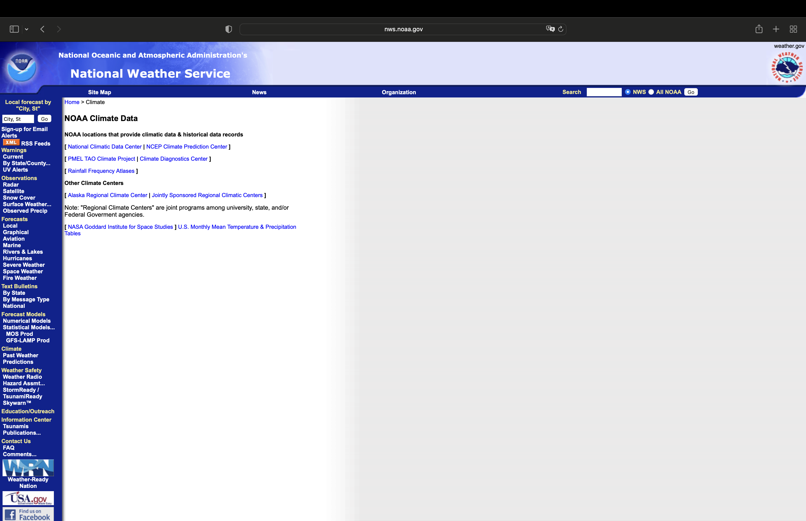
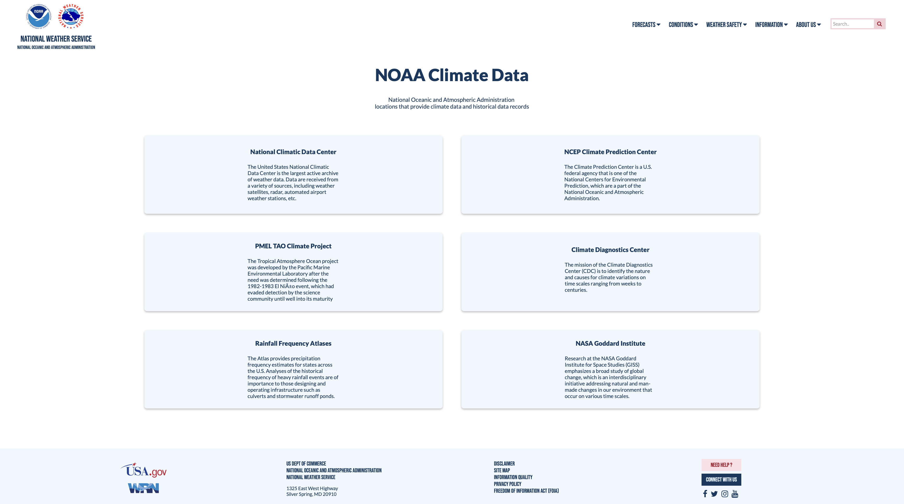

Responsive Redesign
Selected Website
I chose this website because it provides climate data sources at the National Weather Services that are crucial to studying climate change and determining future environmental expectations.
Part 1: Identifying Usability Problems
Usability
- Not mobile responsive
- Font size stays the same
- Windows don’t resize
- Misalignment in side menu
- The search and caption above the search field are centered, while the rest of the menu is left-aligned
- Each menu option links to a different page
- Too many options in side menu, too crowded
- Ineffective use of space + poor alignment
- Sidebar menu is cut off or the text has to wrap around, making it difficult to read
- Font sizes are the same
- No clear indicator of the title vs text / page section
Learnability
- Inconsistency in menu font colors
- There’s tan text as well as white text
- No clear way to find help
- Unclear that the icons are clickable
- Side menu and top menu conflict in their use
- Not sure how they differentiate in their use + priorities
- Inconsistency in nav bar and footer styling
- Inconsistency in link colors
- There are links in tan, blue, white, and gray that change to different colors when hovered over
Memorability
- Search failure for local forecast by “City, St”
- Relies on recall instead of intuition
- Specific formatting for input to search field
- Abbreviations are hard to understand
Conceptual Model
- Organization of side menu is confusing
- The search bar is weirdly placed at the top
- Unconventional order of menu items Sign up link is usually at the bottom along with contact us)
- Lack of information conveyed through menu items (need drop down)
- Lack of information about data records displayed
- Fake links (tan colored headers)
- Text Bulletins
- Climate
- Broken links (404s)
- Ambiguous nav bar item titles
Accessibility
- No page regions or ARIA landmarks were found.
- Low contrast in menu (disagree - the white on blue)
- Missing first level heading - A page does not have a first level heading
- Empty form label
- X Language missing or invalid
- Very small text in footer
- Many picture for aesthetic purposes that are missing alternative text
Overall, there seemed to be a problem with the organization of the page which raised many accessibility issues. This issue is especially apparent in the layout of the horizontal navigation bar and the side menu. The one problem I disagreed with is the low contrast in the navigation bar with white text on a dark blue.
Part 2: Visual Redesign
Low-fidelity Wireframing


- Concise menu bar with fewer elements by combining sidebar with top menu, grouped items
- A single clear, interactable menu centered, with search option at the end
- Sectioned off page region centered, with large heading
- Interactive cards with data sources and a description for each
- Help button with navigation instructions
Visual Design Style Guide
High-fidelity Wireframing
Part 3: Responsive Redesign
Redesigned Website
Between the high fidelity prototypes and actual website redesign, I changed a few aspects of the design to clarify the role of certain elements, such as removing the underlining of nav bar items and adding a downwards carrot next to it to indicate a dropdown.
